Équipement / Véhicules
Véhicules
Plus de 200 véhicules ont déjà été repérés dans les bandes-annonces, avec jusqu'à 300 attendus au lancement — un record pour la série. L'édition Ultimate ajoute deux garages exclusifs de personnalisation : Rideout Customs et One-Eyed Willie (tout-terrain).
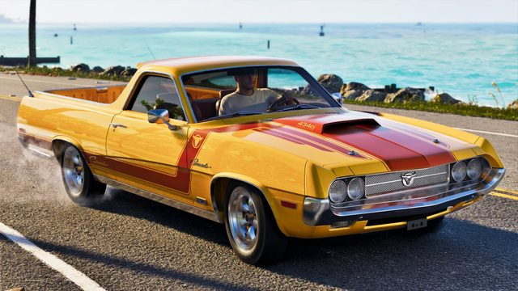
© Rockstar GamesVapid Ganado
Voiture · coupé de Jason, inspiré de la Ford Ranchero 1970
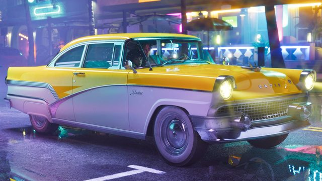
© Rockstar GamesVapid Stanier '55
Voiture · bonus précommande (Vintage Vice City Pack)
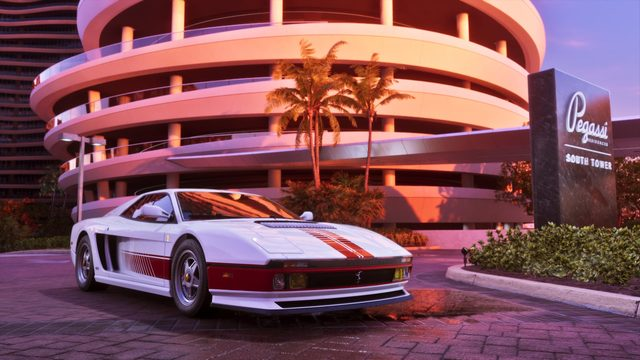
© Rockstar GamesGrotti Cheetah
Voiture de sport · incluse dans l'édition Ultimate
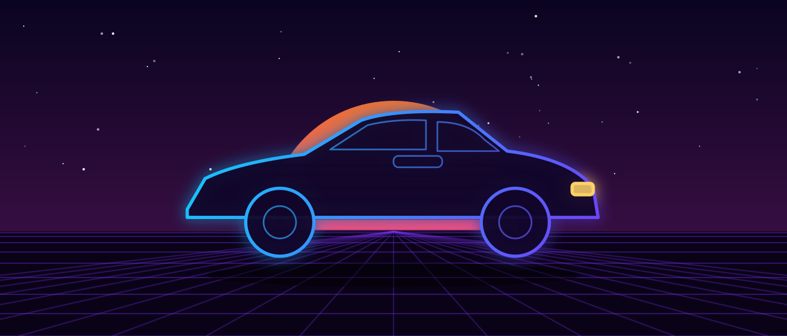
Illustration VCNDeclasse Vamos
Muscle car · de retour, ex-exclusivité GTA Online
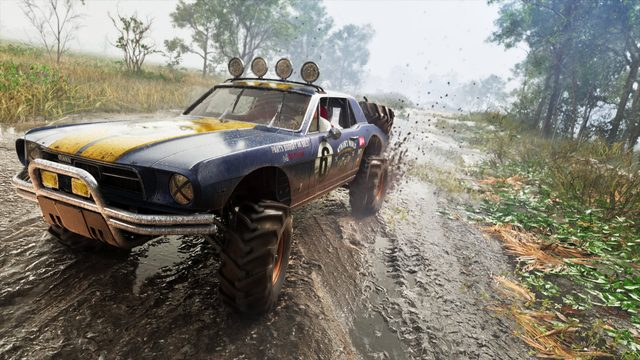
© Rockstar GamesVapid Dominator Buggy '67
Voiture tout-terrain · édition Ultimate
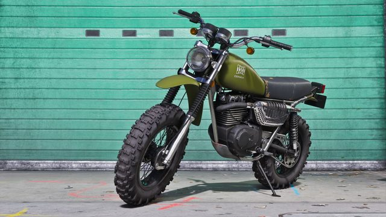
© Rockstar GamesDinka Enduro
Moto · livrée treillis militaire, débloquée via la planque de Jason
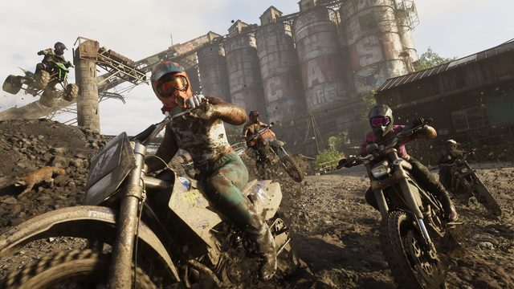
© Rockstar GamesDinka Dirt Bike
Moto tout-terrain · repérée dans les courses de l'Extended Look
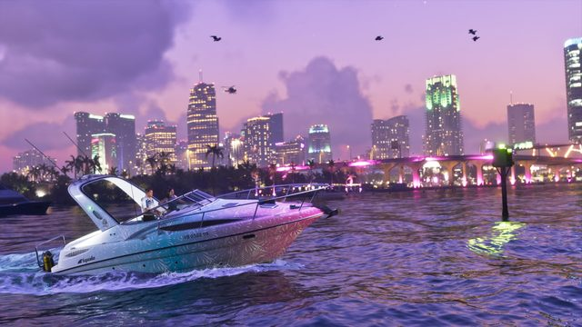
© Rockstar GamesShitzu Squalo
Bateau · hors-bord de l'édition Ultimate
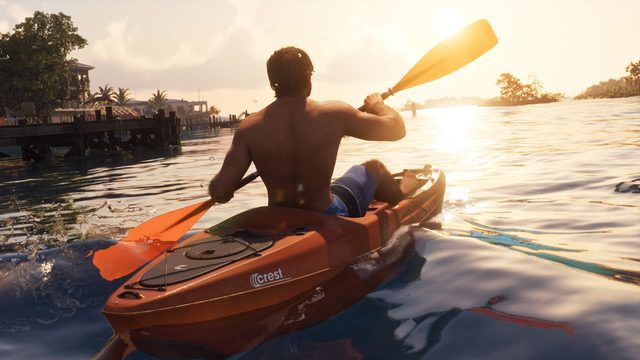
© Rockstar GamesCrest Kayak
Bateau · kayak de la planque de Jason
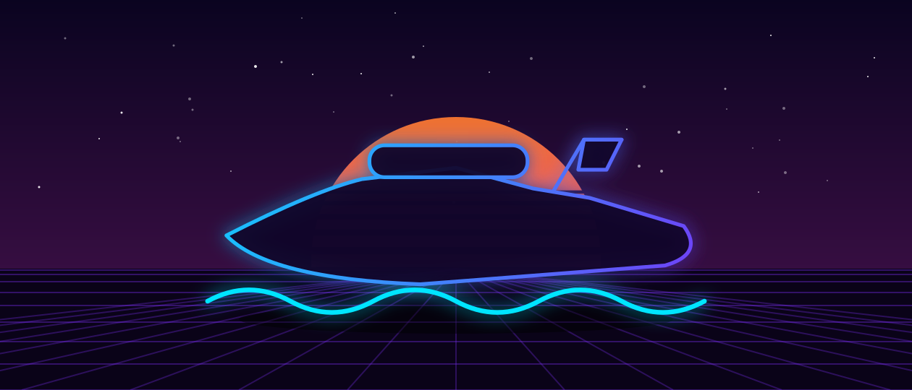
Illustration VCNSeashark
Bateau · scooter des mers monoplace
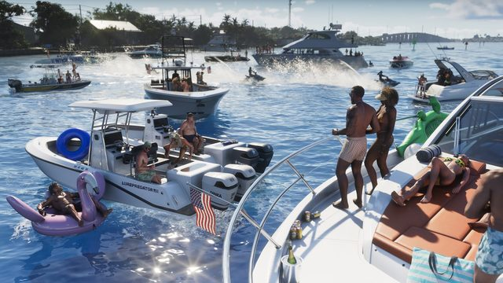
© Rockstar GamesDinka Marquis
Bateau · yacht
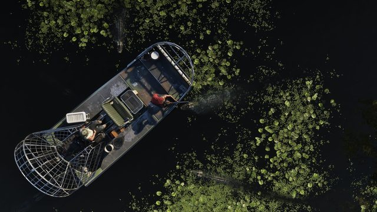
© Rockstar GamesAirboat (fanboat)
Bateau · nouveau type, conçu pour les zones marécageuses
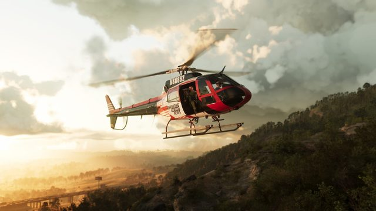
© Rockstar GamesSea Sparrow
Aérien · hélicoptère
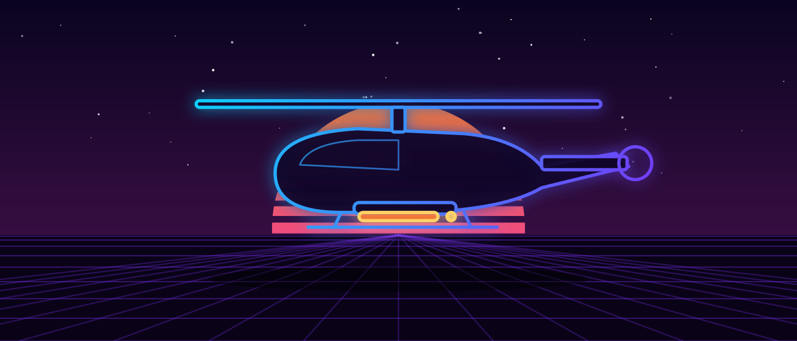
Illustration VCNBuzzard Attack Chopper
Aérien · hélicoptère de combat
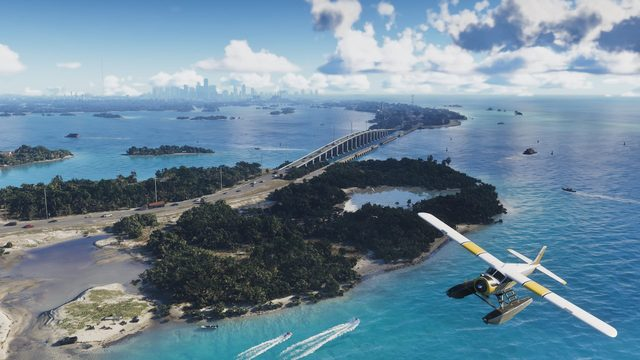
© Rockstar GamesMammoth Dodo
Aérien · hydravion
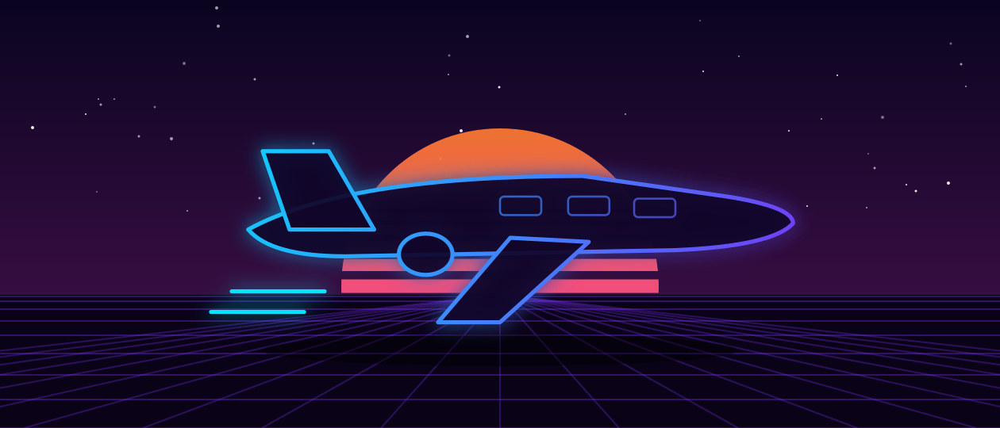
Illustration VCNShamal
Aérien · jet privé
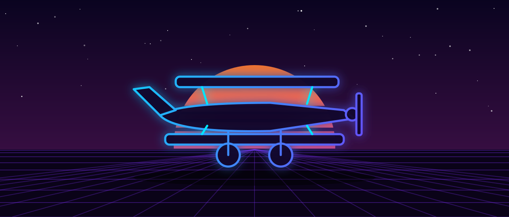
Illustration VCNWestern Company Duster
Aérien · biplane vintage